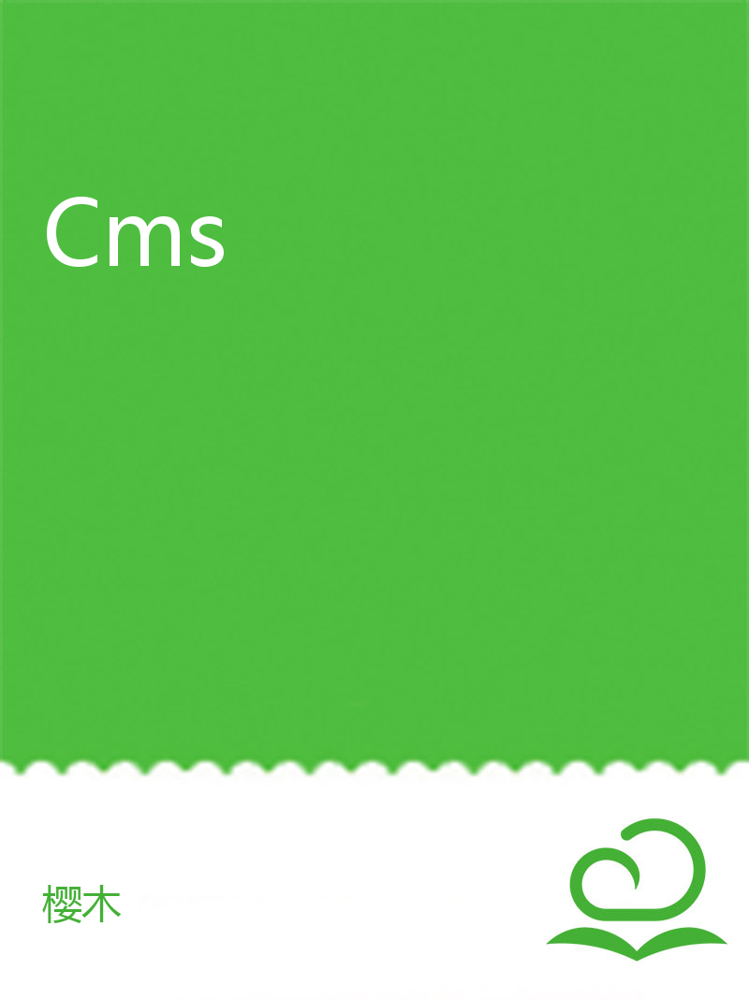

Cms
1.Cms概述
1.1技术框架
1.2代码介绍
1.3后台功能
1.4配置文件
2.快速开始
2.1环境文件
2.2导入项目
2.3运行项目
3.模板标签
3.1广告位
3.2子栏目列表
3.3单个栏目
3.4父栏目列表
3.5根栏目列表
3.6单个内容
3.7内容列表
3.8友情链接列表
3.9分页
3.10SQL列表
3.11内容分页
4.帮助文档
4.1Ehcache页面缓存
4.2Excel文件生成并下载
4.2文件存储
4.2.1OSS
4.2.2FTP
4.3自动生成数据库表
4.4防跨域过滤器
4.5伪静态
本文档使用
看云
构建
3.模板标签
复制链接
腾讯QQ
新浪微博
微信扫一扫
3.1广告位
3.2子栏目列表
3.3单个栏目
3.4父栏目列表
3.5根栏目列表
3.6单个内容
3.7内容列表
3.8友情链接列表
3.9分页
3.10SQL列表
3.11内容分页
上一篇：
2.3运行项目
下一篇：
3.1广告位